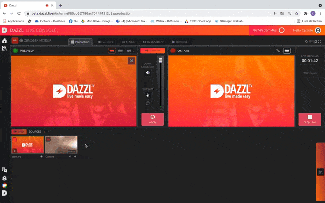

To use the audio mixer, you have to create a new event and enable the "audio mux" function.
Then add your different video sources. Each added source (WebRTC or RTMP) will be automatically mutes in the live if not used on the broadcast ("on air" window). Before starting your live event, you will have to manage your audio settings. The added VOD sources will only be added to the live show if they are pushed in the "On Air" window.
To change the audio settings, enlarge the source window by clicking on " Zoom in ". You can click on the symbol at the bottom right to open the source's audio settings.
You can then visualize the sound volume of the source. It is possible to "mute" it directly, or to select "solo" to mute all the other sources present on the live and keep only this one.
It is also possible to adjust the volume of the source, by dragging the slider directly and stopping it at the desired volume.

The Audio Profiles
When you add a new source, it will be automatically added in the Main profile. That mean the audio of the source will only be mixed if the source is broadcasted on the "on air" window.
To mix the audio source even if it is not broadcasted live, change the profile by clicking on "Main". A new profile will be added, and your source will be added to your live following the settings you choose, even if not used on the final live.
